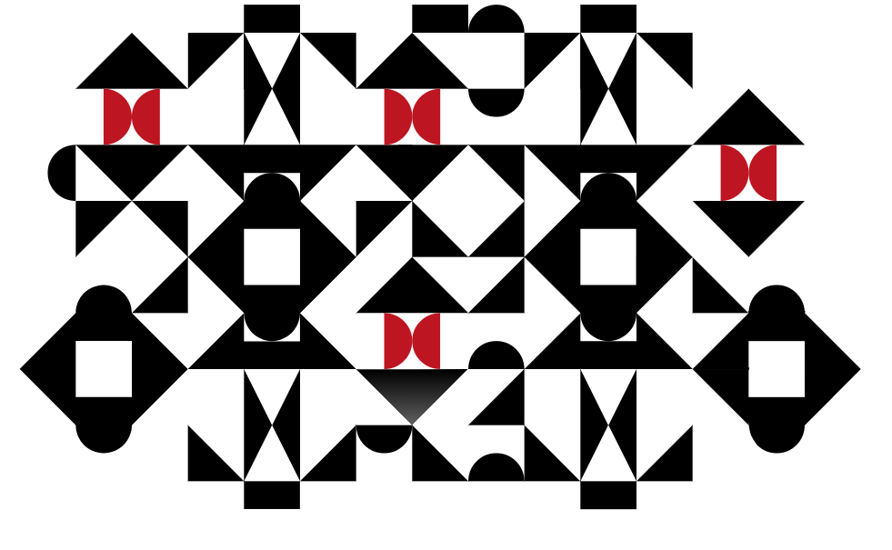
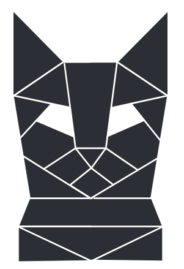
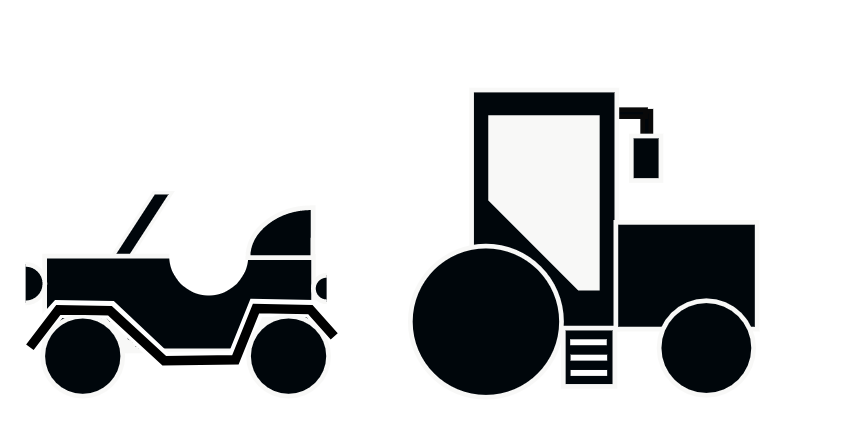
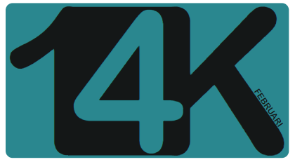

Mijn voorbije projecten
   
Ik ben Kim Kerremans, 23 jaar, studente Cross-media ontwerp aan Artevelde Hogeschool Gent.
Mijn hobbies zijn fotografie en volleybal.
Mijn interesse liggen natuurlijk ook in het grafische en ik hou er van om dingen te bedenken en uit te proberen.
Ik hoop dat ik terechtkom in een drukkerij (ontwerp kinderboeken) of een eventenkantoor (ontwerp flyers, uitnodigingen,...), of ontwerp van logos,...
Heel veel jobmogelijkheden spreken me op dit moment aan.